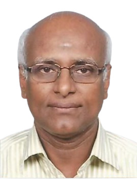
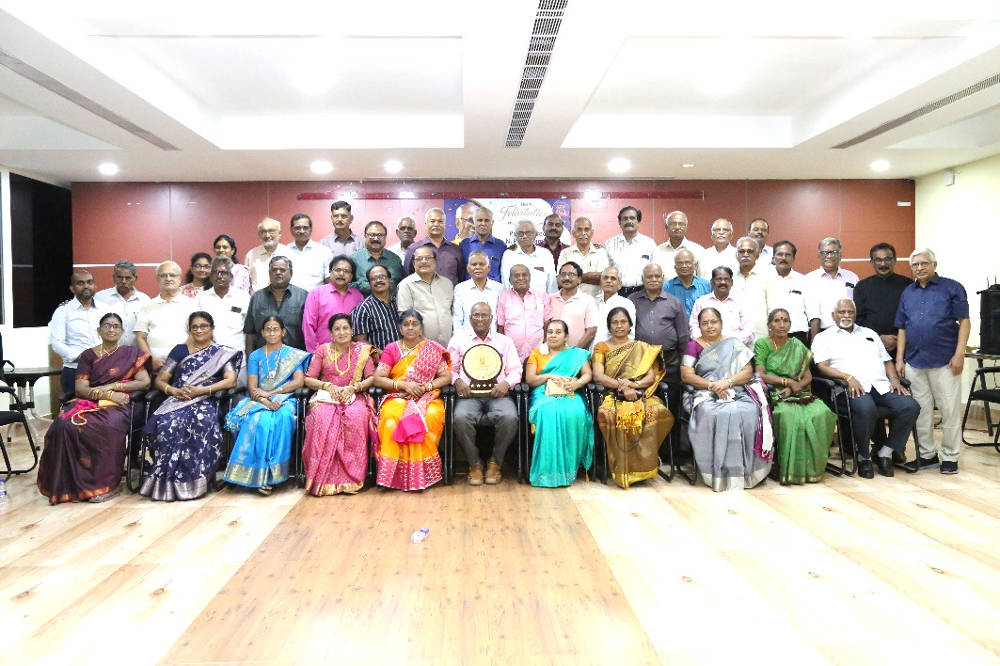
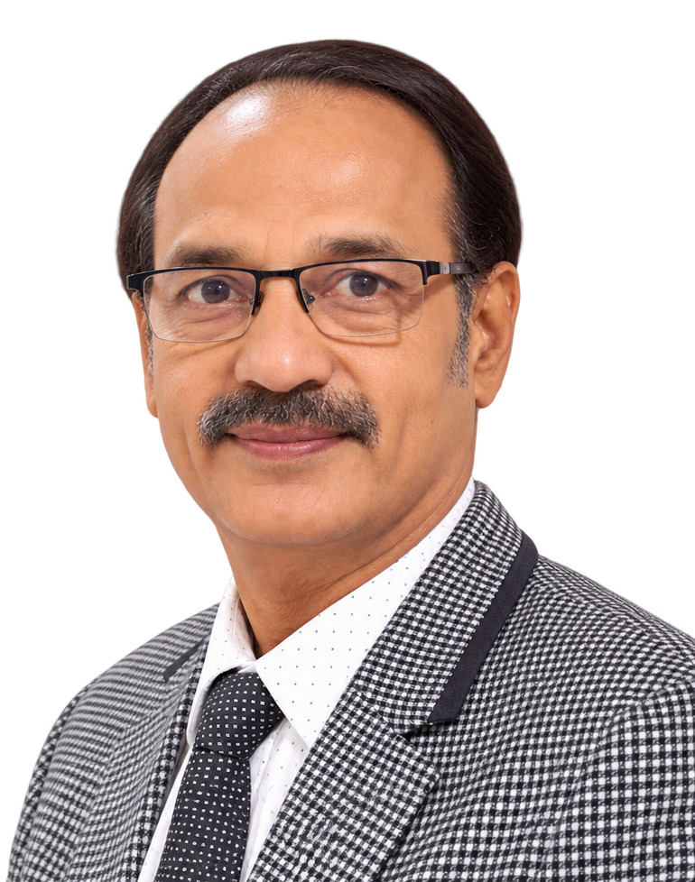
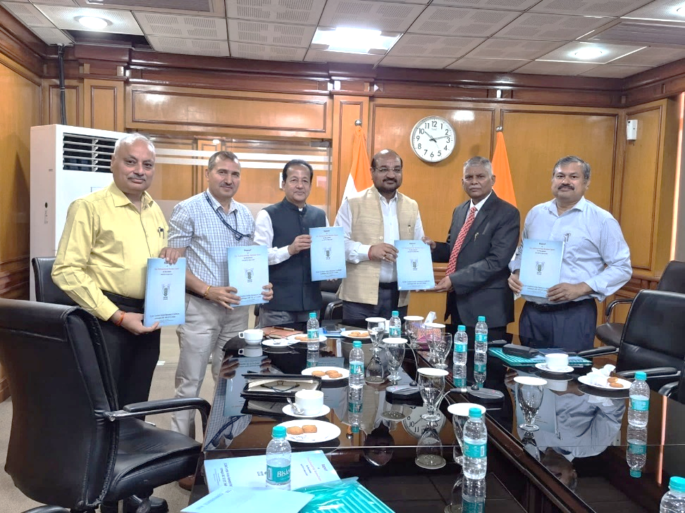
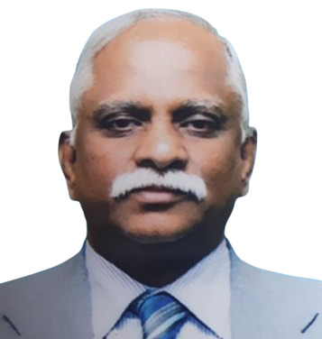
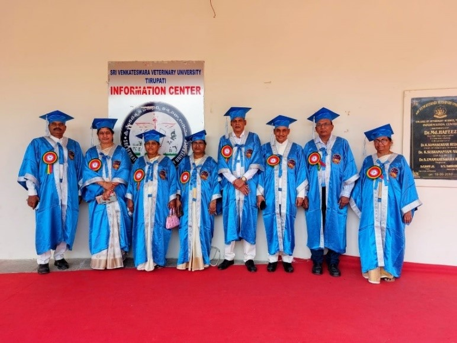
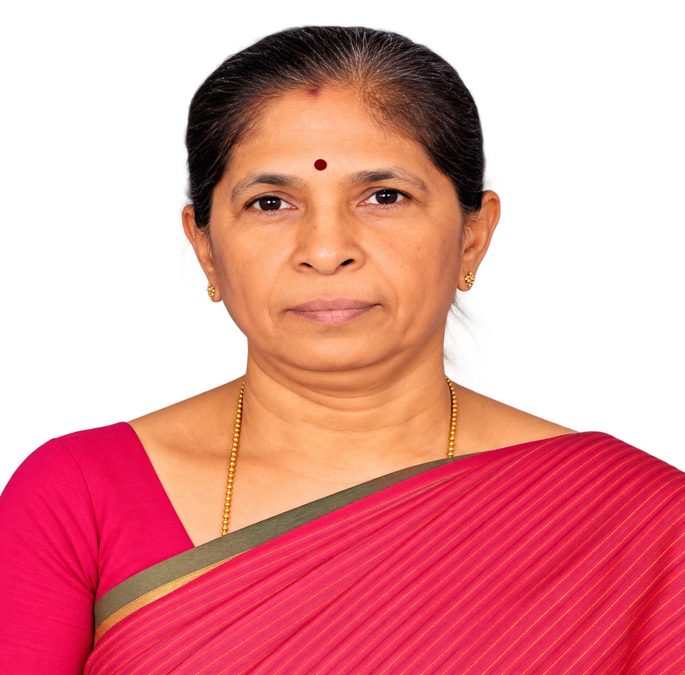

MVC 1974 Batch Felicitates Padma Shri Dr. N. Punniamurthy
Felicitations were organised for Padma Shri awardee Dr. N. Punniamurthy by his batchmates of the MVC 1974 cohort at the Anna University Alumni Club.
Thirty-six batchmates, along with some family members, attended, representing various districts of Tamil Nadu. Notably, Dr. Nandakumar, Mayor of Hutton, Sri Lanka, participated with his spouse.
Speakers highlighted Dr. Punniamurthy’s lifelong commitment to promoting indigenous technical knowledge among farmers across India.

In his address, Dr. Punniamurthy elaborated on the impact of his work on livestock health, emphasising its practical benefits to marginalised livestock farmers and its role in sustainable rural livelihoods.


Presentation of CARI Quinquennial Review Team Report to DG, ICAR
The Quinquennial Review Team (QRT) Report (2019–2024) of the Central Avian Research Institute (CARI), Izatnagar, was presented to the Director General, Indian Council of Agricultural Research (ICAR), in the presence of the Deputy Director General (Animal Sciences) on 16 April 2026 in New Delhi.
The report was presented by Dr. R. Prabakaran, Chairman of the Quinquennial Review Team, highlighting the Institute’s key research achievements, infrastructure development and future priorities.
Dr. A. Natarajan, who served as a member of the QRT, contributed to the comprehensive evaluation of the Institute’s programmes and activities.
The presentation highlighted the importance of strengthening poultry research, improving technology dissemination and addressing emerging challenges in the poultry sector.

TTPA congratulates Dr. R. Prabakaran and Dr. A. Natarajan on their valuable contribution to this important institutional review.

Dr. C. Balachandran Highlights One Health Significance of Canine Diseases
Dr. C. Balachandran , delivered an invited lead paper titled “Canine Lymphadenopathies: Cytopathological Diagnosis and One Health Significance” at ISACP-2026, organised by the Indian Society for Advancement of Canine Practice at Nagpur Veterinary College, MAFSU, Nagpur, from 12–14 February 2026.
His presentation highlighted the diagnostic value of cytopathology in identifying lymph node disorders in dogs and emphasised their relevance within the One Health framework.
He discussed the implications for early disease detection, zoonotic risk assessment, and integrated animal and public health management, underscoring the importance of collaborative approaches to canine healthcare.
TTPA congratulates Dr. C. Balachandran on his invited scientific presentation and his continuing contribution to veterinary knowledge and professional advancement.
Dr. C. Balachandran Elected ICVP President During ISACP-2026
During ISACP-2026, held at Nagpur Veterinary College from 12–14 February 2026, Dr. C. Balachandran chaired sessions on Canine Medicine and served as a judge for M.V.Sc. thesis presentations.
Through these academic responsibilities, he contributed to the scientific deliberations of the conference and the evaluation of research presented by young scholars.
Dr. Balachandran also participated in the Valedictory Function as Guest of Honour, where he acknowledged the contributions of the organisers and participants.
During this period, Dr. C. Balachandran was elected President of the Indian Council of Veterinary Pathologists (ICVP) for the 2026–2028 term.
TTPA congratulates Dr. C. Balachandran on his election as President of ICVP and wishes him a productive and successful tenure.
Dr. G. V. Sudhakar Rao Attends SVVU Convocation as Academic Council Member
Dr. Ganne Venkata Sudhakar Rao attended the Convocation of Shri Venkateswara Veterinary University (SVVU) on 30 March 2026, in his capacity as a Member of the Academic Council.
The convocation marked an important academic occasion for the University, recognising the achievements of graduating students as they progressed to the next stage of their professional careers.
Participation of TANUVAS alumni in academic bodies of other veterinary universities provides opportunities for the exchange of academic perspectives, institutional collaboration, and sharing of good practices. Such professional interactions can contribute to stronger inter-university linkages in veterinary education and research.

TTPA congratulates Dr. G. V. Sudhakar Rao on his continuing contribution to veterinary education through his role as a Member of the Academic Council of SVVU.

Dr. K. Vijayarani Appointed ICAR-Emeritus Professor at TANUVAS
Dr. K. Vijayarani has been appointed as an ICAR-Emeritus Professor at TANUVAS by the Indian Council of Agricultural Research (ICAR), New Delhi.
The appointment recognises her experience and contributions in the field of animal biotechnology, including her involvement in research, innovation and academic activities..
Under the appointment, Dr. Vijayarani will continue her academic and research contributions at TANUVAS for the next three years, providing an opportunity to share her expertise and experience with the scientific and academic community.
TTPA congratulates Dr. K. Vijayarani on her appointment as ICAR-Emeritus Professor and wishes her continued success in this new phase of her research and academic career.